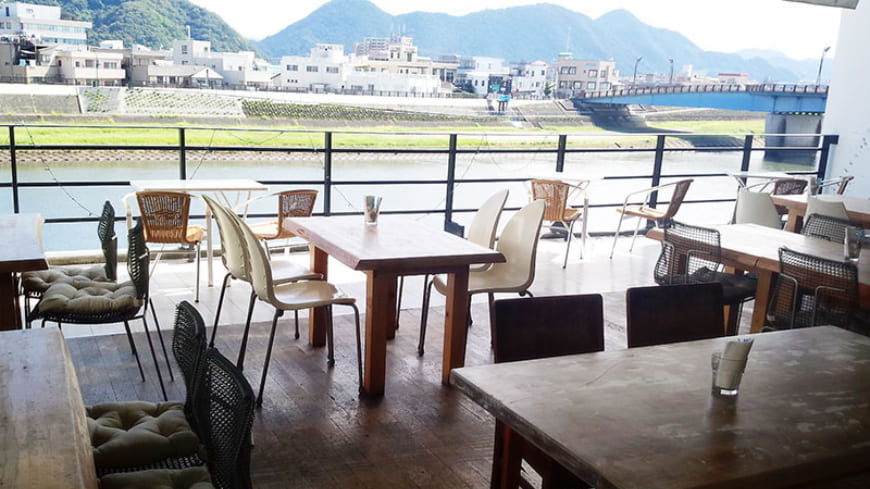
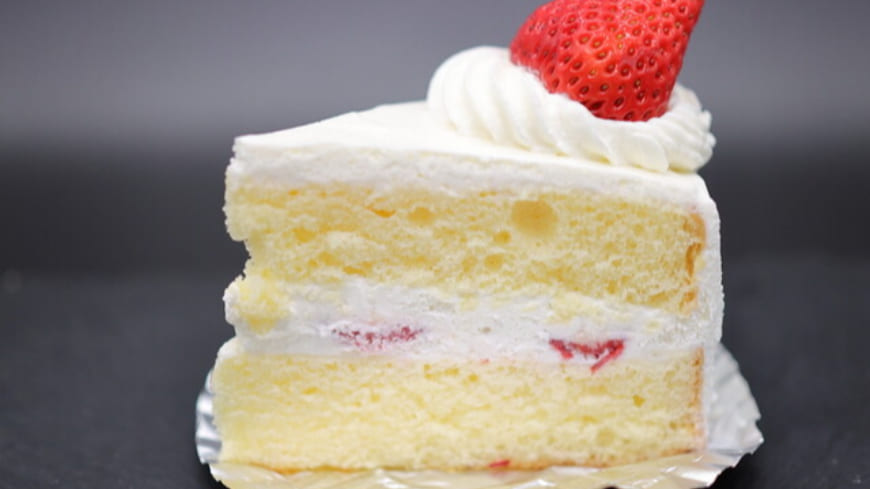
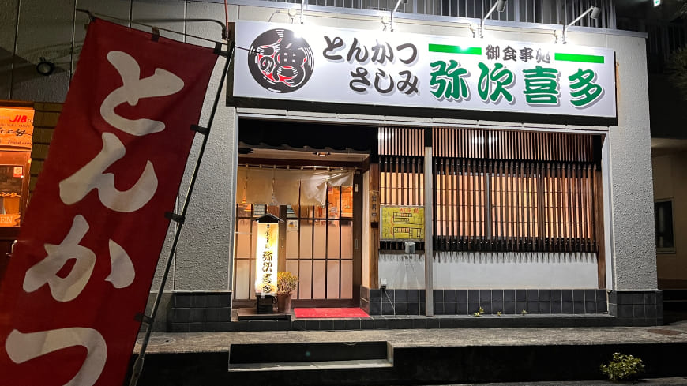
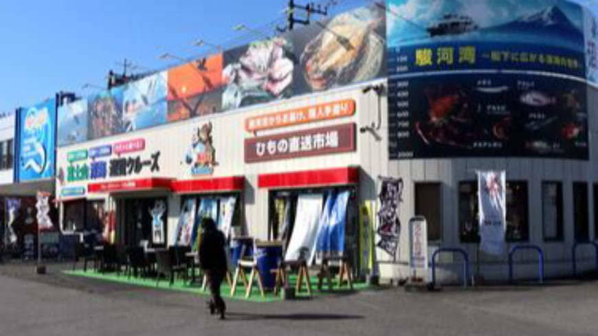

THE BLUE WATER
定休日：火曜日 飲食・喫茶
営業時間：平・休日 11:00～22:00
月曜のモーニングと第1,第3の月曜日のディナーは休み
公式サイト

すいーつNekoNeko
定休日：無休 飲食・デザート
営業時間：平日11:00～18:00 土曜日10:00～17:00 日曜日10:00～16:00
公式サイト

弥次喜多幸町店
定休日：水曜日 飲食・和食
営業時間：平・休日 11:30～14:00 17:00～21:00
公式サイト

川正商店
定休日：月曜日 日曜日 水産・加工
営業時間：平・休日 8:00～18:00
公式サイト
欧蘭陀館 下河原店
定休日：月曜日 飲食・喫茶
営業時間：火～土9:00～21:00 日曜日10:00～21:00
ラストオーダー20:10
公式サイト